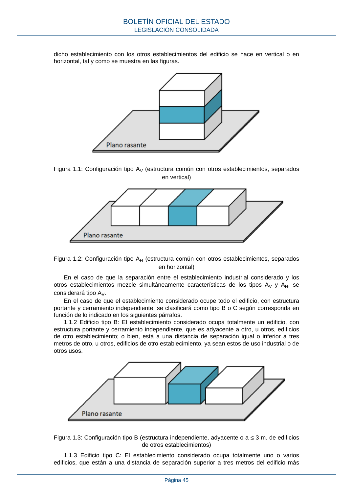

RSCIEI · edición 2025-04-10 · capa asociada
Documento RSCIEI-asociada · SHA-256 del PDF 85aa0af25d51e5b58d8975a4eefbf76d3f57a8933445cfe814ae9c4818a2e3e7
Página física 45 de 108.
Copia fiel del PDF fuente · Fuente oficial
Ficha de la disposición en la fuente oficial
Texto extraído y reorganizado: Basado en datos de la Agencia Estatal Boletín Oficial del Estado. PDF reproducido: Fuente de los datos: Agencia Estatal Boletín Oficial del Estado.
Formato: Texto de la página (Markdown)
dicho establecimiento con los otros establecimientos del edificio se hace en vertical o en horizontal, tal y como se muestra en las figuras. Figura 1.1: Configuración tipo AV (estructura común con otros establecimientos, separados en vertical) Figura 1.2: Configuración tipo AH (estructura común con otros establecimientos, separados en horizontal) En el caso de que la separación entre el establecimiento industrial considerado y los otros establecimientos mezcle simultáneamente características de los tipos AV y AH, se considerará tipo AV. En el caso de que el establecimiento considerado ocupe todo el edificio, con estructura portante y cerramiento independiente, se clasificará como tipo B o C según corresponda en función de lo indicado en los siguientes párrafos. 1.1.2 Edificio tipo B: El establecimiento considerado ocupa totalmente un edificio, con estructura portante y cerramiento independiente, que es adyacente a otro, u otros, edificios de otro establecimiento; o bien, está a una distancia de separación igual o inferior a tres metros de otro, u otros, edificios de otro establecimiento, ya sean estos de uso industrial o de otros usos. Figura 1.3: Configuración tipo B (estructura independiente, adyacente o a ≤ 3 m. de edificios de otros establecimientos) 1.1.3 Edificio tipo C: El establecimiento considerado ocupa totalmente uno o varios edificios, que están a una distancia de separación superior a tres metros del edificio más BOLETÍN OFICIAL DEL ESTADO LEGISLACIÓN CONSOLIDADA Página 45
